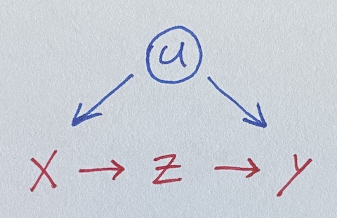

Simple Front Door Regression
Saturday May 1, 2021
If you have a mediator, you can estimate effects despite confounding, which is neat. The idea is like flip of instrumental variables; here the constructed non-confounded variable is what’s not explained by the confounded one. A two-stage regression illustrates the idea.
We seek to estimate the impact of x on y, where they’re both influenced by u.

Unfortunately, u is unobserved, so we can’t control for it. But lo, there is z, a perfect mediator between x and y. Let’s simulate data where all the true coefficients are one.
u = rnorm(100)
x = u + rnorm(100)
z = x + rnorm(100)
y = u + z + rnorm(100)Regressing naively, we get an incorrect estimate for the effect of x on y.
summary(lm(y ~ x))
## Estimate Std. Error t value Pr(>|t|)
## x 1.54648 0.09848 15.704 <2e-16 ***Luckily, z is in there, and it isn’t confounded with u.
But how do we use it? Throwing it in the regression doesn’t help.
summary(lm(y ~ x + z))
## Estimate Std. Error t value Pr(>|t|)
## x 0.46175 0.15517 2.976 0.00369 **
## z 1.02436 0.12740 8.041 2.2e-12 ***A fancier model-fitting approach is needed. Here’s an illustrative two-stage regression, ignoring standard error concerns.
Stage one: Do a regression using x to predict z. Note the coefficient on x. Then get the residuals for z from that model, which I’ll call z_not_from_x. This uses the non-confounding of z with u to make a “version of” (maybe a component of) z that is independent of u (because it’s independent of x): the variation of z not due to x (or u).
Stage two: Do a regression using z_not_from_x to predict y.
Multiplying the coefficients from the two models gives the effect of x on y.
summary(lm(z ~ x))
## Estimate Std. Error t value Pr(>|t|)
## x 1.058940 0.060797 17.418 <2e-16 ***
z_not_from_x = residuals(lm(z ~ x))
summary(lm(y ~ z_not_from_x))
## Estimate Std. Error t value Pr(>|t|)
## z_not_from_x 1.0244 0.2889 3.546 0.000601 ***
1.058940 * 1.0244 # Estimate for x on y
## 1.084778We’ve recovered a fair estimate of the true parameter for x, despite not using the unobserved confound u!
Here’s the same thing as above but with the lavaan package for
SEM, following Thoemmes.
model = "z ~ x_on_z * x
y ~ z_on_y * z
x ~~ y # Allow x and y to still covary
x_on_y := x_on_z * z_on_y"
summary(sem(model, data.frame(x=x, z=z, y=y)))
## Estimate Std.Err z-value P(>|z|)
## x_on_z 1.059 0.060 17.594 0.000
## z_on_y 1.024 0.125 8.164 0.000
## x_on_y 1.085 0.146 7.406 0.000So there’s standard errors for you!
Other cases
This example goes well with a collection of four simpler ("back door") regression situations, What should be in your regression? It goes especially well with its cousin, A simple Instrumental Variable.
More complicated cases
The dagitty tools seems to be a great way to analyze a given situation (expressed as a DAG) and figure out what you can do with it.
Maybe regression discontinuity is another kind of case?